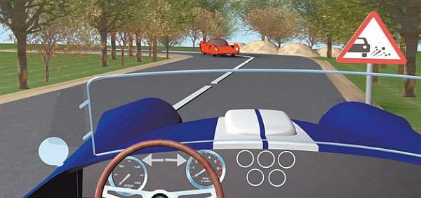
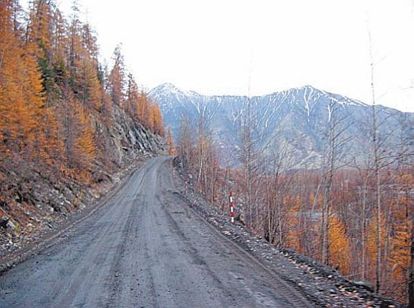

Движение по грунтовым и гравийным дорогам.
Только ленивый не ругает российские грунтовые дороги и не пытается их объехать при первой возможности. Это неудивительно, так как при езде по таким дорогам и водители, и пассажиры испытывают серьезный дискомфорт. Кстати, то же самое касается и автомобиля – в первую очередь страдают его подвеска и колеса.
Характерной особенностью езды по грунтовым дорогам в сухую погоду является сильная пыль, которая поднимается из-под колес впереди идущего транспортного средства. Во-первых, это значительно ухудшает видимость (можно сравнить с сильным туманом); во-вторых, через неплотно закрытые окна, форточки и люки пыль моментально попадет в салон автомобиля, и вы будете вынуждены ее вдыхать; в-третьих, при езде в таких условиях воздушный фильтр вашего автомобиля будет быстро забиваться пылью и, возможно, вам придется менять его раньше положенного срока; в-четвертых, ваш автомобиль очень скоро покроется толстым слоем пыли, что особенно обидно, если вы лишь недавно посещали автомобильную мойку.
Однако не спешите сразу обгонять пылящее вам «в нос» транспортное средство. Ведь из-за пыли, которая сильно ограничивает обзор, вы практически не будете видеть полосу встречного движения. Нормальная видимость появится только после того как передний бампер вашего автомобиля достигнет хотя бы середины впереди идущей машины. В большинстве случаев целесообразно просто немного отстать и дать переднему автомобилю оторваться. Для этого уменьшите скорость либо вообще остановитесь хотя бы минут на 5–7.
Как правило, на грунтовых дорогах водители из-за боязни повредить подвеску или колеса стараются ехать на небольшой скорости. Однако быстрая езда чревата и другой опасностью: на таком дорожном покрытии автомобиль больше, чем на асфальте, подвержен заносам. Это особенно актуально для грунтовых дорог, на поверхности которых имеется гравий (иногда его рассыпают специально, иногда он имеет природное происхождение). По гравию автомобиль может скользить. Например, при резком повороте машина «поедет» в сторону на этих небольших камнях (то есть камни под колесами будут перемещаться синхронно с автомобилем) и станет частично либо полностью неуправляемой (рис. 4.4).

Рис. 4.4. Этот знак можно увидеть и на асфальтовой, и на гравийной дороге
ВНИМАНИЕ
Если вы движетесь по «грунтовке» или гравийной дороге с большим количеством камней, замедлите движение, закройте все окна и люки, увеличьте расстояние до едущего впереди автомобиля, а также боковое расстояние при встречном разъезде. Не обгоняйте и не приближайтесь к крупногабаритным транспортным средствам (грузовикам, фурам, автобусам).
Свои особенности имеет езда по грунтовой дороге в дождливую и сырую погоду. В первую очередь отметим, что дорога, как принято говорить, «разбивается», то есть на ней появляются дополнительные ямы, ухабы и выбоины. При сильном ливне плохо укатанная грунтовая дорога становится вязкой и есть риск забуксовать (рис. 4.5).

Рис. 4.5. На такой дороге машина может сползти в кювет
ВНИМАНИЕ
Если вы едете по грунтовой дороге в дождливую погоду, старайтесь не слишком прижиматься к обочине. У таких дорог обочины при дожде часто бывают совершенно непригодными не только для езды, но и для кратковременной остановки транспортного средства, поскольку становятся вязкими и автомобиль может медленно сползти в кювет.
Независимо от погоды не рекомендуется ехать по грунтовой дороге накатом (то есть с выключенной передачей или нажатой педалью сцепления). Как уже отмечалось выше, на таком дорожном покрытии заметно снижается коэффициент сцепления колес с поверхностью проезжей части, поэтому машину необходимо держать на контроле с помощью двигателя.
Главное при движении по «грунтовке» – ехать с небольшой, но постоянной скоростью, стараясь не переключать передачи без особой необходимости. Такой способ езды повышает коэффициент сцепления колес с дорожным покрытием. Очень нежелательно резко разгоняться или резко тормозить – это может привести к пробуксовке колес. Не стоит также резко изменять направление движения, так как автомобиль может потерять управление.
Если дорога, по которой вы едете, имеет глубокие колеи, старайтесь двигаться вне колеи. Иногда колеи скрываются в дорожной грязи или в воде, в таком случае безопаснее продолжить движение по ним, так как дно колеи сильнее утрамбовано. Кстати, в подобных ситуациях имеет смысл выйти из машины и оценить состояние дорожного покрытия.
СОВЕТ
Участки дороги, покрытые жидкой грязью и водой, преодолевайте, предварительно разогнавшись и не останавливаясь (так вы не застрянете).
Если ваша машина завязла в грязи и колеса буксуют, не давайте большие обороты двигателю – бесполезно. Попробуйте, используя задний ход, выехать в обратном направлении по созданному только что следу. Если ничего не получается, придется хоть немного откопать колеса, после чего подложить под них все, что найдете: доски, коврики из салона, ветки деревьев и кустов и т. п. Кстати, не все знают, что выбраться из грязи помогут пассажиры, причем не только простым выталкиванием автомобиля (этот способ известен всем): пусть пассажиры сядут на капот (для автомобиля с передним приводом) или на багажник (для автомобиля с задним приводом), что усилит давление на ведущие колеса и улучшит их сцепление с дорогой. При этом пассажиры должны соблюдать осторожность, чтобы, во-первых, не упасть, а во-вторых – не помять или не поцарапать капот или багажник.
Проехать через яму на проезжей части можно, замедлив движение и переключившись на пониженную передачу. Начинайте въезжать в яму медленно и плавно, а когда передние колеса окажутся в яме, немного добавьте газ. Когда в яме окажутся и задние колеса, нужно совершить резкое (в пределах разумного, конечно) ускорение.